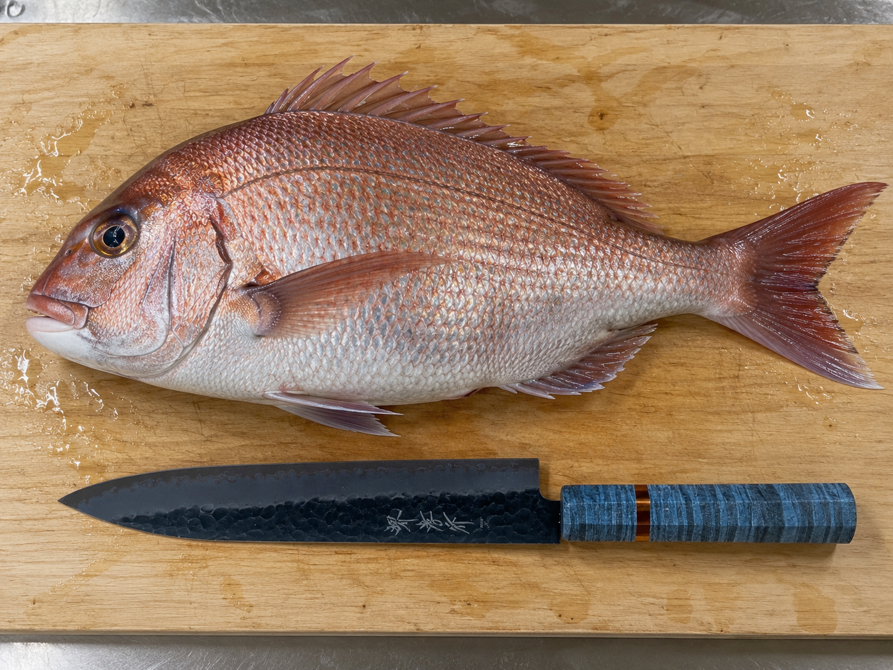
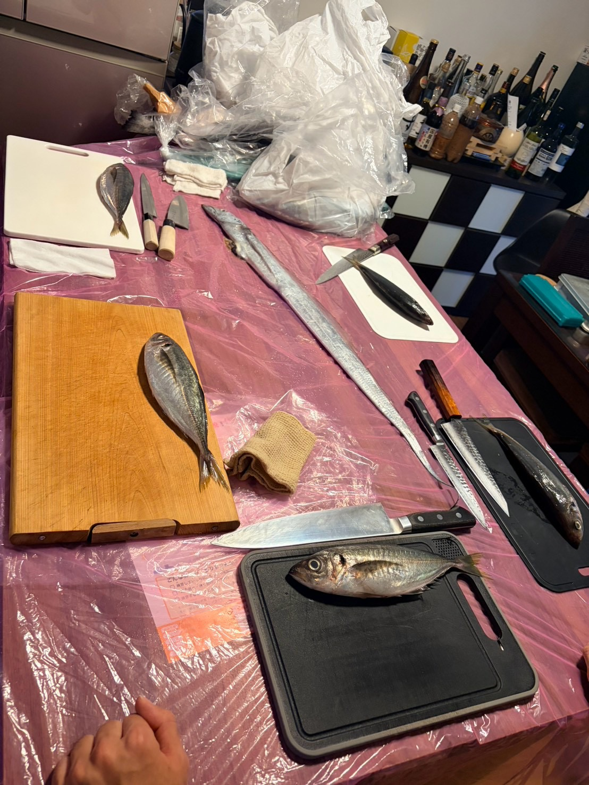
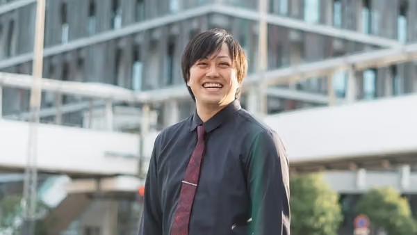
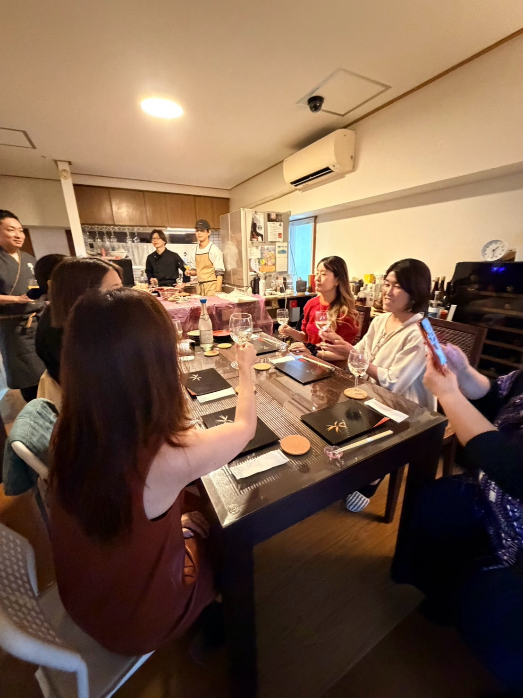
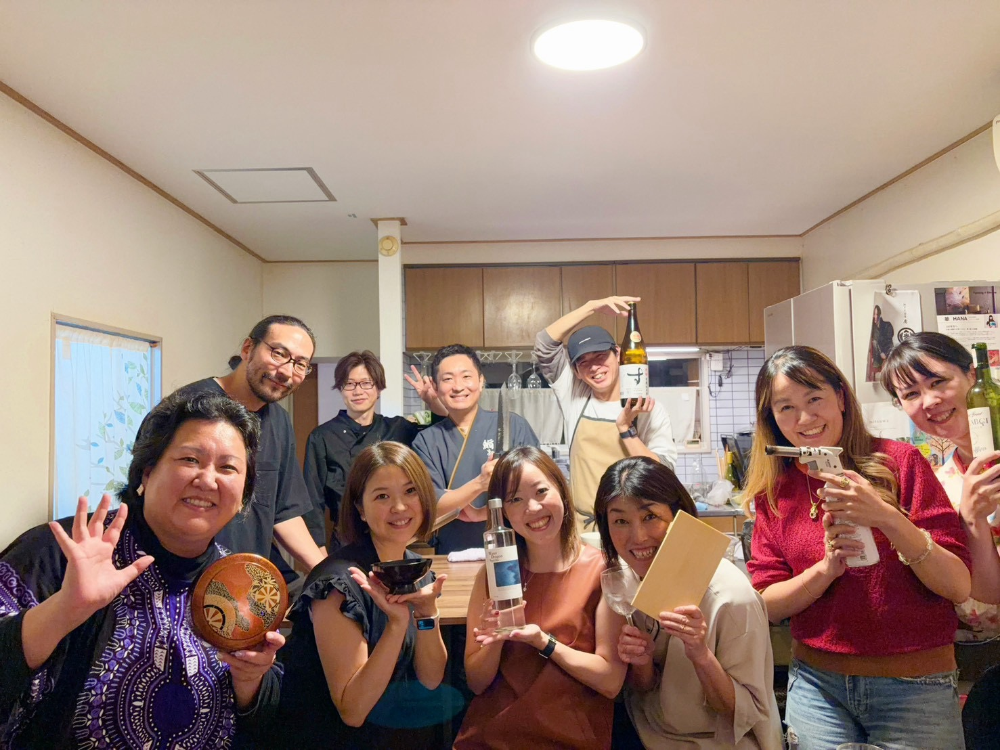
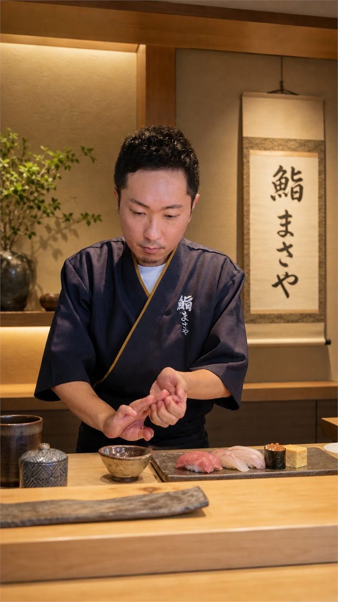

2026年11月26日（木）｜ 北参道
目利きのプロ、元セリ人による
魚の捌き方講座
＆ 夜の鮨会
元セリ人が豊洲で選んだ魚を使って、捌き方や包丁の使い方を少人数で練習します。夜は、昼に捌いた魚も使って鮨会を開きます。魚を丸ごと一尾から捌いてみたい方も、お鮨を食べたい方も、ぜひ！

14:00〜16:00
魚の捌き方講座
丸魚を一尾買って、家でも捌いてみたい。そんな方に、豊洲で元セリ人が選んだ魚を一人ずつご用意します。
鮨会を何十回も開いてきましたが、普段スーパーで手にする魚と比べて、こういう魚は捌くときの手応えが別格です。身に張りがあると、包丁を入れたときに身が崩れにくい。今回は、その違いを自分の手で感じてほしいです。
3尾
1尾
まずは小型魚。包丁をどこから入れるか教わって、二尾目、三尾目も自分でやってみます。次は大型魚。大きさが変わると包丁の入れ方もどう変わるのか、自分の手で確かめます。
捌いた魚は、ご自宅へ
自分で捌いた魚は持ち帰れます。保冷バッグと保冷剤をお持ちください。夜の鮨会では、昼に捌いた魚も使います。生・湯霜・炙りで、同じ魚の味わいを比べてみてください。
魚種の例はアジやイワシ、真鯛やブリなど。当日の仕入れによって変わります。進み具合や仕入れによっては、追加で捌けることもあります。
15,000円 4尾分の魚代込み・定員4名

講師紹介
丹野涼 さかなコンサルタント
横浜市中央卸売市場で約7年間セリ人を務める。現在は"さかなコンサルタント"として独立し、魚の仕入れや調理アドバイス、飲食店向けのケータリング、市場同行ツアーなど、食や流通の現場に根ざした幅広い活動を展開。

18:00〜21:00
夜の鮨会
お品書き
※当鮨会の特徴：生・湯霜・炙りなど、同じ魚でも食べ方によって味わいが違うことを体験いただきます
昼に捌いた魚も使います。握るのは、実践講座を受けた方や僕の鮨仲間です。よかったら、食べた感想もその場で聞かせてください。
お一人7,000円 夜だけの参加も歓迎
お酒は持ち込み可です。飲みたい方はお好きなものをお持ちください。
持ち込み料なし。お水とお茶はご用意します。


午前の講座 10:30〜13:30｜定員3名
鮨会で、主役になりたい方へ
実は3時間で鮨は握れるようになります。午前の講座で握り方を練習して、その日の夜にお客さんへふるまいます。夜の鮨会に握り手として参加する方は、当日の午前講座を受講してください。
マンツーマンレッスンは通常110,000円ですが、この日はお一人でも55,000円。
参加特典：夜の鮨会参加無料＆握り手として実技指導
- 3時間で鮨が握れる実践講座（夜の鮨会付き）55,000円
- 実践講座＋魚の捌き方講座（夜の鮨会付き）70,000円
参加枠と料金
| 参加枠 | 10:30〜13:30 握る | 14:00〜16:00 捌く | 18:00〜21:00 鮨会 | 料金 |
|---|---|---|---|---|
| 実践講座＋魚の捌き方講座＋夜の鮨会 | ● | ● | 握り手 | 70,000円 |
| 実践講座＋夜の鮨会 | ● | — | 握り手 | 55,000円 |
| 魚の捌き方講座＋夜の鮨会 | — | ● | 食事 | 22,000円 |
| 魚の捌き方講座 | — | ● | — | 15,000円 |
| 夜の鮨会（食事のみ） | — | — | 食事 | 7,000円 |
実践講座は2つの参加枠あわせて定員3名。魚の捌き方講座は対象の参加枠あわせて定員4名です。
鮨まさや大将
後藤将哉
12年間の会社員生活を経て、未経験から鮨職人へ。わずか半年の修業期間を経て、独立。本業はビジネスプロデュース。
偶然出会った鮨によって人生の流れが大きく変わった経験を、著書『経営者こそ、鮨を握れ。』に綴る。

よくある質問
夜の鮨会だけ参加できますか？
はい。18:00からの鮨会に、お一人7,000円で参加できます。
魚の捌き方講座に出なくても、夜に握れますか？
はい。当日の午前講座を受ければ、夜は握り手として参加できます。午前講座と夜の鮨会で55,000円です。
※この日に限り、鮨会参加が無料
どんな魚を捌きますか？
小型魚はアジやイワシ、大型魚は真鯛やブリなどを予定していますが、魚種は当日の仕入れによって変わる可能性があります。
捌いた魚は持ち帰れますか？
お持ち帰りいただけます。保冷バッグと保冷剤をご持参ください。
お酒は持ち込めますか？
はい。持ち込み料はかかりません。お水とお茶はこちらでご用意します。
お申し込み
会場は東京・北参道です。
会場の詳細は、お申し込み後にメールでご案内します。
まもなく受付開始